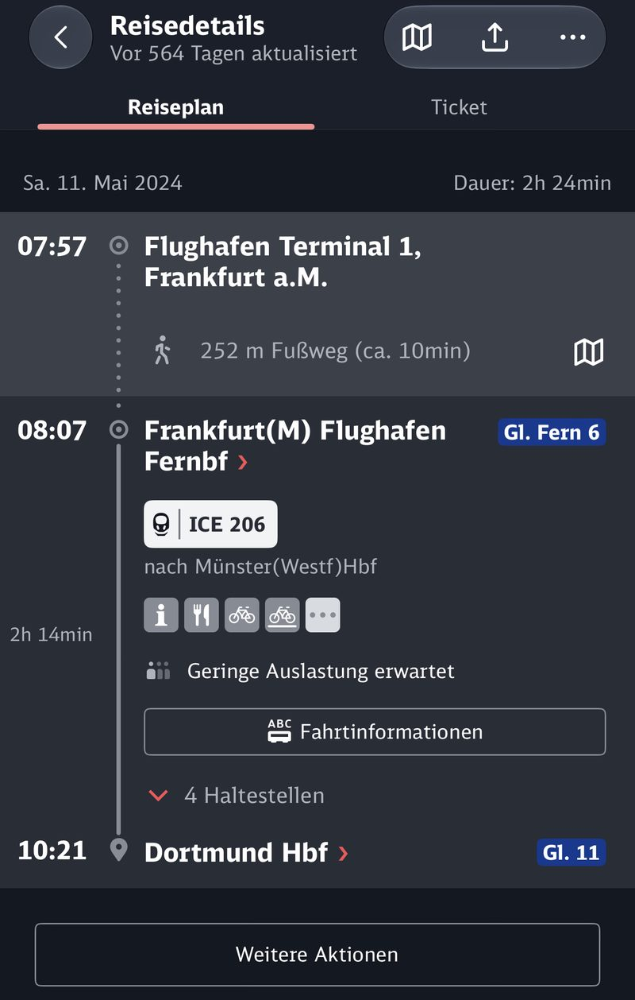

Beginning My German Life
My First Day in Germany 🇩🇪
One suitcase, one backpack, and the beginning of a new chapter.
Moving to another country is one of those experiences that sounds exciting when you talk about it, but feels completely different when you actually do it.
Looking back, my journey to Germany began long before I boarded the plane.
After graduating from university in China, I spent a considerable amount of time learning German. Eventually, I passed the Goethe-Zertifikat B2 examination at the Goethe-Institut in Beijing. It was an important milestone for me, not only because learning German was challenging, but also because passing the exam brought me one step closer to studying in Germany.
After that came the paperwork, the visa application, and all the preparations that come with moving abroad.
And then, suddenly, everything was ready.
I packed my belongings into one suitcase and one backpack, said goodbye to my family, and headed to Beijing Capital International Airport.
That was pretty much everything I brought with me to start a new life in another country.
A Flight into the Unknown
My flight from Beijing to Frankfurt departed at around three in the morning.
I still remember how strange it felt to be at the airport in the middle of the night, knowing that I was about to leave China and begin an entirely new chapter of my life.
I had studied German for quite some time, passed the necessary language examinations, and completed all the administrative procedures. On paper, I was prepared.
But being prepared on paper and actually moving to another country are two very different things.
During the flight, I had plenty of time to think about what was waiting for me.
A different language, a different culture, a different education system, and a completely unfamiliar environment.
Everything was about to change.
Welcome to Frankfurt!
After a long flight, I finally landed at Frankfurt Airport.
The first thing I did after arriving was make a video call to my family to let them know that I had arrived safely.
Then came my first real challenge in Germany: passport control.
I joined the queue for immigration and waited for my turn. Like many international students arriving in Germany for the first time, I had brought an impressive collection of documents.
My passport, visa, admission documents, and various other papers were all carefully prepared.
When I finally reached the immigration counter, two German border police officers examined my passport, visa, and supporting documents.
And they took their time.
They looked through my paperwork, checked the information, and asked me quite a few questions in German.
At that moment, I was certainly glad that I had spent so much time learning the language.
Although the process felt rather long, I answered their questions truthfully and explained the purpose of my visit.
Eventually, everything was fine, and they allowed me to enter Germany.
My first conversation in Germany had turned out to be an immigration interview. Not exactly the warmest welcome, but certainly a memorable one.
At least my German had already proved useful!
My First Encounter with Deutsche Bahn 🚆
After passing through immigration and collecting my luggage, I still had another journey ahead of me.
My destination was Dortmund.
I needed to travel from Frankfurt Airport to Dortmund by train, which meant navigating the German railway system for the first time.
And, of course, this was when I had my first encounter with Deutsche Bahn.
My ICE train was delayed.

Normally, a delayed train would be frustrating.
But in my case, it was actually a blessing.
After spending so much time at the airport, including the lengthy passport control process, I was running much later than expected.
If the train had departed on time, I might have missed it.
I honestly have no idea how I would have managed the situation back then, especially considering that I had just arrived in Germany, was exhausted from the flight, and knew almost nothing about the railway system.
Fortunately, the delay worked in my favour.
I managed to catch my train and continue my journey to Dortmund.
Looking back, I find this part of the story particularly amusing.
Deutsche Bahn's notorious delays actually saved me on my very first day in Germany.
Not everyone can say that.
A Very Long Saturday
By the time I finally arrived in Dortmund, I was completely exhausted.
It had already been a long journey, and I still had things to take care of.
To make matters more interesting, it was Saturday.
For someone who had just arrived from China, the German weekend was something I had not fully anticipated.
Many shops had limited opening hours on Saturdays, and most supermarkets were closed on Sundays.
This was quite different from what I was used to in China, where buying groceries or finding something to eat on a Sunday was rarely a problem.
I was tired, unfamiliar with my surroundings, and still trying to figure out how everything worked.
That Saturday, I barely had time to eat.
I think I only managed to have one proper meal throughout the entire day.
Not exactly the exciting first-day experience I had imagined.
But at least I had made it to Dortmund.
Sunday: Bread, Bread, and More Bread
The following day was Sunday.
And that was when I discovered one of the most important facts about everyday life in Germany:
Almost everything is closed on Sundays.
I had arrived without knowing much about the local shops, supermarkets, or restaurants.
I also had not prepared enough food for the weekend.
As a result, I spent most of Sunday eating bread.
Yes, bread.
For practically the entire day.
It was probably one of the least impressive meals of my life, but it has become one of my most memorable experiences since moving abroad.
There I was, thousands of kilometres away from home, sitting in an unfamiliar city, eating bread and trying to process everything that had happened over the previous two days.
I had successfully entered Germany, survived my first immigration interview, benefited from a delayed ICE train, and discovered the reality of German Sunday shopping restrictions.
Not bad for a first weekend.
The Beginning of Something New
When I think about my first days in Germany now, I realise how much has changed since then.
At the time, everything was unfamiliar.
Even simple tasks required extra effort: understanding train announcements, communicating with strangers, buying groceries, or figuring out where I needed to go.
I had learned German in classrooms and passed language examinations, but living in Germany was a completely different experience.
There is a big difference between understanding a language in a textbook and using it to deal with everyday situations.
And there is an even bigger difference between imagining life abroad and actually living it.
Over time, I gradually became more familiar with the country, its language, its culture, and its sometimes rather complicated bureaucracy.
What once seemed difficult eventually became part of everyday life.
Today, I am studying Mechatronics at Friedrich-Alexander-Universität Erlangen-Nürnberg (FAU), and my life in Germany looks very different from that first exhausting weekend in Dortmund.
Of course, there are still challenges.
Studying engineering in a foreign language is not always easy, and adapting to life abroad is an ongoing process.
But when I look back at the person who arrived at Frankfurt Airport with one suitcase, one backpack, and a folder full of documents, I cannot help but smile.
He had no idea what the next few years would bring.
And perhaps that was part of the excitement.
Every journey has a beginning. Mine started with a three-in-the-morning flight, a lengthy immigration interview, a delayed Deutsche Bahn train, and an entire Sunday spent eating bread.
It was far from perfect.
But it was my beginning.
And that is how my life in Germany began.